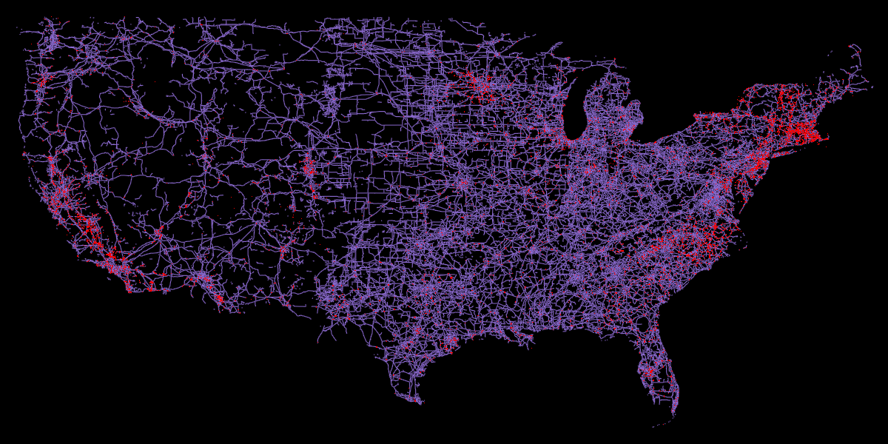

import ibis
from ibis import _
import geopandas as gpd
import shapely
import datashader as ds
from datashader.transfer_functions import shade, stack, set_background
%config InlineBackend.figure_formats = ['png']
# from PIL import ImageElectricity is supplied to our homes but we rarely know where it’s coming from. To get a better sense of where power is being generated and how it’s supplied to us, I wanted to visualize the power line network and the power plants. For this I’ll use the infrastructure layer from Overture Maps, along with Ibis with the DuckDB backend to filter the parquet files, and finally plotting the data with datashader.
Retrieve the boundary for USA and clip to lower 48 states
admin_0 = gpd.read_file("https://github.com/nvkelso/natural-earth-vector/raw/master/geojson/ne_10m_admin_0_countries.geojson")
polygon = admin_0.loc[admin_0['ADM0_A3'].eq('USA'), 'geometry'].clip(shapely.box(-125, 24, -65, 49)).iloc[0]
crs = admin_0.crsNow let’s retrieve the power lines and stations from the Overture Maps infrastructure data. We can use Ibis with the DuckDB backend to filter the parquet files.
%%time
# Initialize DuckDB
con = ibis.duckdb.connect(extensions=['spatial'])
# Disable progress bar as it causes kernel to crash
con.raw_sql("SET enable_progress_bar = false");
# Load Overture Maps parquet data from s3
t = con.read_parquet("s3://overturemaps-us-west-2/release/2024-11-13.0/theme=base/type=infrastructure/*", table_name="infra-usa")
# Convert polygon for ibis
geometry_expr = ibis.literal(polygon)
# Filter to locations within the polygon, for the 'power' subtype
expr = (
t
.rename(infra_class="class")
.filter(
_.geometry.within(geometry_expr),
_.subtype == "power",
_.infra_class.isin(["plant", "power_line", "minor_line"])
)
.select(["names", "geometry", "infra_class"])
)
# Write to local parquet
con.to_parquet(expr, "usa-power.parquet")CPU times: user 6min 51s, sys: 6.37 s, total: 6min 57s
Wall time: 2min 33sFor reference, I processed this data on a Macbook pro M1 with a 1Gbps up / 50Mbps down internet connection.
Now we can move on to visualizing the data. First, we’ll clean up the geometries before plotting:
# Open local parquet with Geopandas (dataset is fairly small so this is performant)
power = gpd.read_parquet("usa-power.parquet")power['geom_type'] = power['geometry'].geom_type
power.groupby(['infra_class', 'geom_type'])['geometry'].count()infra_class geom_type
minor_line LineString 93837
Point 3
Polygon 43
plant LineString 2
MultiPolygon 1380
Point 26
Polygon 10588
power_line LineString 242367
Point 2
Polygon 1155
Name: geometry, dtype: int64One would expect power_line and minor_line to be LineString type, which they almost entirely are. We can simply drop the other geometry types as there are so few. plant is mainly a mix of Polygon and MultiPolygon, which is expected, and for this project we’ll drop the LineString and convert the Points to a Polygon with a simple buffer.
# Drop power lines that are not LineString
power = power.loc[~(power['infra_class'].isin(['power_line', 'minor_line']) & power['geom_type'].ne('LineString'))]# Drop plant that are LineString
power = power.loc[~(power['infra_class'].eq('plant') & power['geom_type'].eq('LineString'))]# Convert Points to a circle of radius 100m
index = power['infra_class'].eq('plant') & power['geom_type'].eq('Point')
power.loc[index, 'geometry'] = power.loc[index, 'geometry'].to_crs('EPSG:3857').buffer(100).to_crs(crs)Now we can plot the data
# Select subsets for power lines and plants
power_lines = power.loc[power['infra_class'].isin(['power_line', 'minor_line'])]
power_plants = power.loc[power['infra_class'].eq('plant')]# Set plot limits from bounds of the polygon with a buffer
xmin, ymin, xmax, ymax = shapely.box(*polygon.bounds).buffer(1).bounds
width = 1200
height = 600
# Initialize datashader canvas
cvs = ds.Canvas(plot_width=width, plot_height=height, x_range=(xmin, xmax), y_range=(ymin, ymax))
# Rasterize/aggregate geometries
power_lines_agg = cvs.line(power_lines, geometry="geometry", line_width=0.1)
power_plants_agg = cvs.polygons(power_plants, geometry="geometry")
boundary_agg = cvs.polygons(gpd.GeoDataFrame({'geometry': polygon}, crs=crs, index=[0]), geometry="geometry")
# Stack and render image
img = stack(
shade(power_lines_agg, cmap=ds.colors.color_lookup['mediumpurple'], alpha=255),
shade(power_plants_agg, cmap=ds.colors.color_lookup['red'], alpha=255),
)
img = set_background(img, "black")img.to_pil()
We can see that many power plants are (unsurprisingly) located near dense urban areas, especially along the eastern and western coasts.